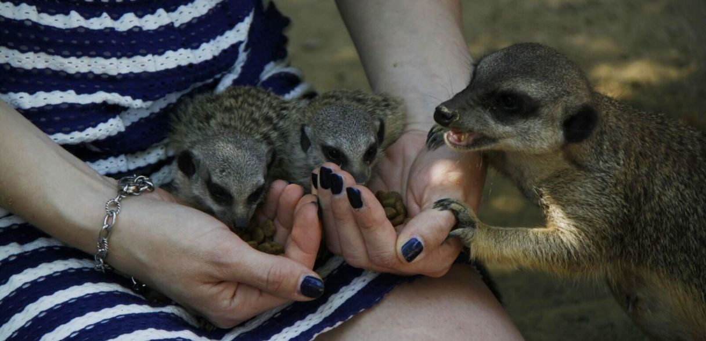

Dieses exklusive Erlebnis mit den quirligen Linzer Kattas werden Sie nicht so schnell vergessen:
Nach dem Erkunden der Futterküche bereiten Sie selbst das Futter für die Lemuren zu und bringen es
höchstpersönlich zu den Tieren. Während Ihrem Besuch in der Katta-Anlage informiert Sie unser Zoologe
selbstverständlich über die Eigenarten des berühmtesten Vertreter der madagassischen Tierwelt und stellt
Ihnen alle Mitglieder der Katta Gruppe vor.
Bei der Fütterung kommt es – je nach Laune der Zoobewohner – auch zu hautnahem Tierkontakt!
Leistungen:
- Futterzubereitung für Kattas hinter den Kulissen des Zoos
- Spannende Infos vom Zoologen und Vorstellung der einzelnen Tiere
- Fütterung mit der Möglichkeit zum hautnahen Tierkontakt
- 5 Erinnerungsfotos vom Fotografen für die Teilnehmer
Dauer: ca. 1,5 Stunden
Termine: Montag-Freitag (ausgenommen Feiertags) nach Absprache; Start: 10:00 Uhr
Teilnehmeranzahl: 2 Personen (Kinder: ab 12 Jahren, mind. 1 Erwachsener)
Preis pro Sonderpaket: EUR 250,- inkl. Eintritt
Auf Wunsch kann das Tiererlebnis Auf DU&DU mit den Linzer Kattasauch in der "light-Version" angeboten
werden. Hier ist kein Fotograf enthalten.
Dauer: ca. 75-90 Minuten Preis pro Termin: EUR 200.- inkl. Eintritt
Eine Anmeldung ist unbedingt erforderlich - bitte kontaktieren Sie uns unter um einen Termin
zu vereinbaren. Vielen Dank!
Gerne stellen wir für die Tierbegegnungen auch Gutscheine aus!

Sonderpaket „Erdmännchen“
Die Erdmännchen gehören unumstritten zu den beliebtesten Tieren im Linzer Zoo.
Aus diesem Grund wurde das „Sonderpaket Erdmännchen“ ins Leben gerufen, um besonders interessierten
Besuchern einen kleinen Einblick in das Leben der afrikanischen Mangusten zu geben.
Bei diesem Paket starten wir mit vielen interessanten Informationen zu Erdmännchen allgemein bzw. natürlich
auch zu unserer Gruppe: die Tiere und das Verhalten werden vorgestellt und anschließend gibt es einen Blick
hinter die Kulissen des Erdmännchenhauses. Je nach Witterung werden wir auch die Anlage (innen oder außen)
betreten und die neugierigen Erdmännchen selber entscheiden lassen, wie weit sie sich den Besuchern nähern
möchten. Mit etwas Futter im Gepäck sollte das aber kein Problem sein. Nach dem Kennenlernen befüllen wir
noch ein Spielzeug zur Beschäftigung der Erdmännchen und beobachten, wie geschickt die Tiere das "Problem"
lösen. Fragen werden selbstverständlich gerne beantwortet.
Bitte beachten Sie, dass die Erdmännchen auch im Zoo noch wilde Jäger mit spitzen Zähnen sind und ein
Streicheln nicht möglich ist! Die Tiere entscheiden selber, wie weit Sie sich dem Menschen nähern.
Leistungen:
- Interessante Infos vom Zoologen und Vorstellung der Gruppe
- Blick hinter die Kulissen des Erdmännchenhauses
- Betreten der Erdmännchen-Anlage
- Erdmännchen „Enrichment“ (Beschäftigung)
Dauer: ca. 45 Minuten
Termine sind an folgenden Tagen, sowie zu folgenden Zeiten - nach Verfügbarkeit - möglich: Montag - 11:00 Uhr
Mittwoch - 11:00 Uhr
Freitag - 15:00 Uhr
Teilnehmeranzahl: max. 3 Personen (Kinder: ab 12 Jahren, mind. 1 Erwachsener)
Preis pro Sonderpaket: EUR 90,- inkl. Eintritt
Eine Anmeldung ist unbedingt erforderlich - bitte kontaktieren Sie uns unter office@zoo-linz.at um einen Termin
zu vereinbaren. Vielen Dank!